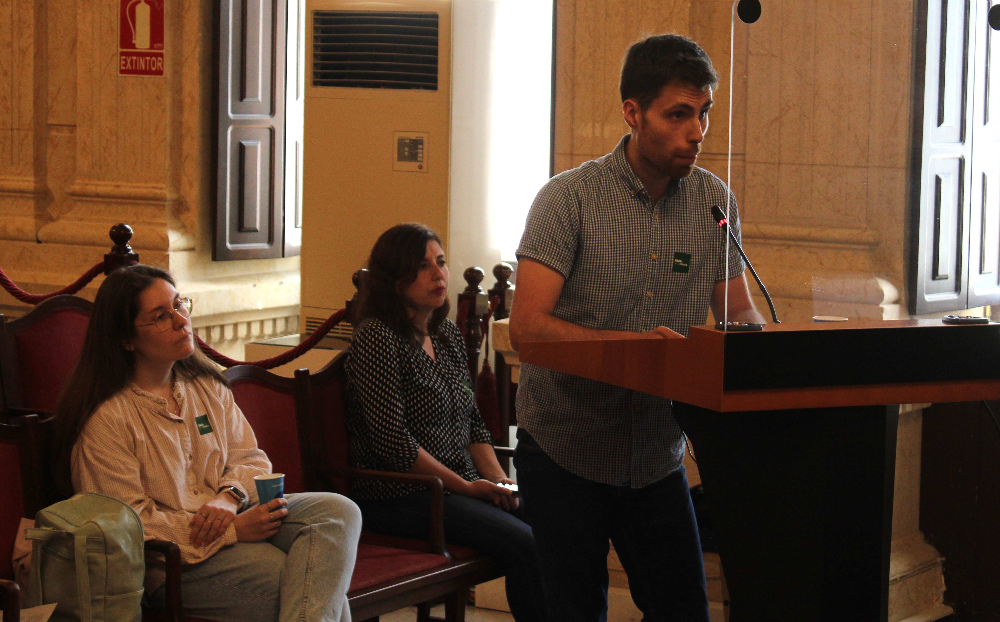
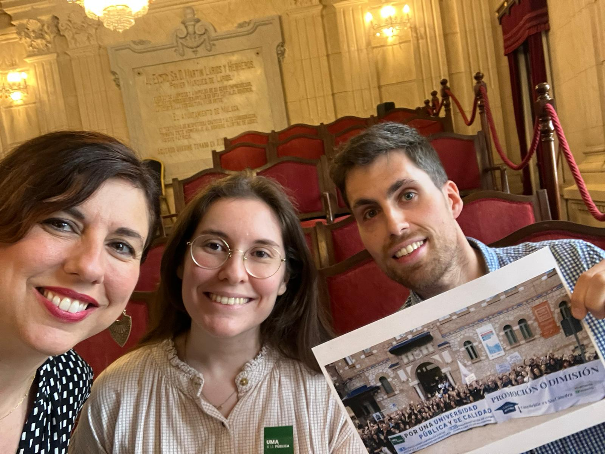
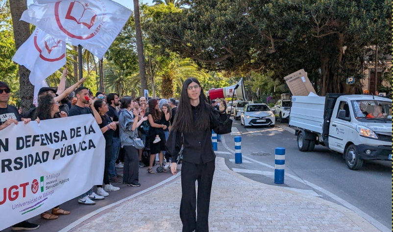
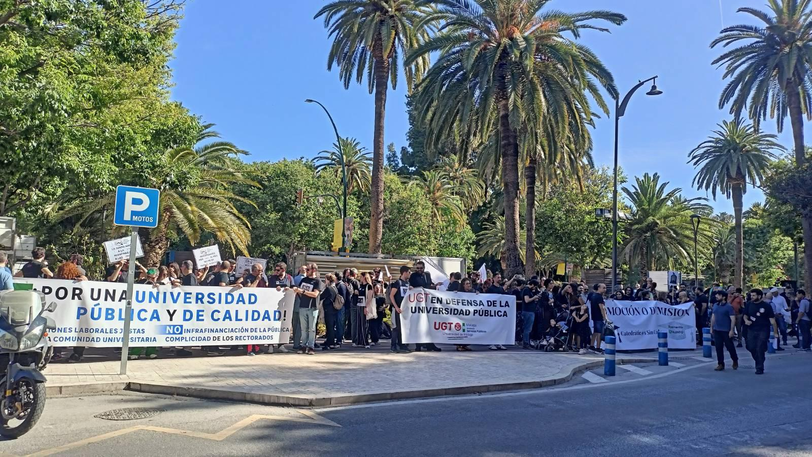
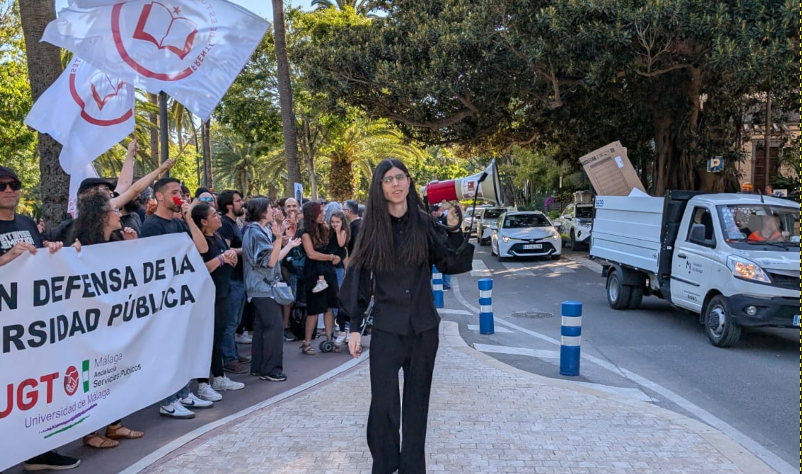
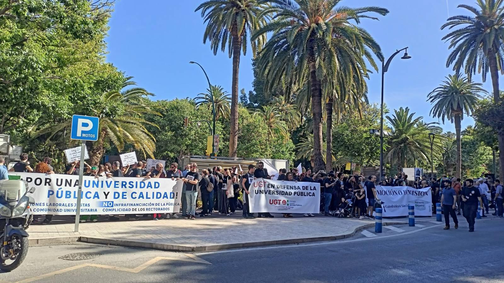

"Un despliegue policial sin precedentes en la concentración pacífica frente al Rectorado de la Universidad de Málaga", Malagaldia (16 de mayo). Leer la noticia completa
¿Quiénes somos?
La Coordinadora UMA x la Pública es una aglomeración de distintos colectivos que luchan en defensa de la universidad pública. Nuestro objetivo es garantizar una educación accesible, inclusiva y de calidad para todas las personas.
Colectivos que forman parte de la coordinadora:
PSI-UMA (Profesores Sustitutos Interinos)
 CIMA (Investigadores de Málaga)
CIMA (Investigadores de Málaga)
 CPAD (Profesores Ayudantes Doctores)
CPAD (Profesores Ayudantes Doctores)
ACUMA (Acreditados a Cátedra)
Frente de estudiantes
 SIAM (Sindicato de Apoyo Mutuo de la Universidad de Málaga)
SIAM (Sindicato de Apoyo Mutuo de la Universidad de Málaga)
CCOO (Comisiones Obreras)
UGT (Unión General de Trabajadores)
Nuestras reivindicaciones
La Universidad de Málaga, como el conjunto del sistema público universitario español, atraviesa una etapa crítica marcada por una injusta infrafinanciación por parte de la Junta de Andalucía y por una gestión institucional que da la espalda a su comunidad. Desde la Coordinadora UMA por la Pública, que agrupa a diversos colectivos y sindicatos, exigimos un cambio profundo en las condiciones laborales, académicas y sociales que garantice el futuro de una universidad verdaderamente pública, inclusiva y comprometida con la igualdad de oportunidades. La combinación del Plan de Ajuste Económico, la entrada sin control de universidades privadas en la ciudad y la pasividad del equipo rectoral, que incumple de forma sistemática su programa electoral en materia de personal, perpetúa la precariedad, la desigualdad y el deterioro del sistema universitario público. Es urgente revertir esta deriva: hay que garantizar una financiación justa que repare los recortes arrastrados desde 2012 y, sobre todo, exigir al equipo rectoral que cumpla su palabra, asuma responsabilidades y sitúe de una vez a las personas en el centro de su acción institucional.
Financiación adecuada y justa
Es necesario garantizar una financiación adecuada y justa para la UMA, que revierta la infrafinanciación histórica que arrastramos desde 2012 y asegure recursos suficientes para el desarrollo académico y la investigación. La universidad debe ser una prioridad para la Junta de Andalucía y, para el equipo que gobierna la institución, una máxima que defender continuamente.
Promoción y estabilización de la plantilla
La promoción y estabilización de la plantilla son un derecho y deben estar desvinculadas de limitaciones presupuestarias coyunturales que afectan injustamente a nuestro futuro profesional. Exigimos planes de estabilización que permitan el desarrollo de la carrera profesional para todo el personal docente e investigador (PDI), como son profesorado interino, personal investigador, asociados y ayudantes doctores, y para el personal técnico, de gestión, administración y servicios (PTGAS). Exigimos la reactivación de los procesos de promoción para los ayudantes acreditados a titular y el personal funcionario acreditado a cátedra, con un calendario claro y transparente.
Sistema retributivo justo
Reivindicamos un sistema retributivo justo que garantice el reconocimiento y pago de los complementos salariales a todo el personal docente e investigador, independientemente de la figura contractual. Rechazamos la precariedad laboral estructural que suponen las múltiples categorías contractuales, así como los retrasos en los pagos por parte de la Junta de Andalucía. Demandamos además la activación de contrataciones paralizadas y una oferta de empleo público que cubra el 100% de las jubilaciones.
Becas y ayudas para el estudiantado
Exigimos la reactivación y ampliación de becas y ayudas para nuestro estudiantado, como las del comedor, y una mejora urgente en la gestión de sustituciones del profesorado para evitar demoras de meses. Reclamamos inversión en materiales didácticos y bibliográficos, precios justos en las futuras residencias universitarias, y el reconocimiento y remuneración de todas las prácticas a cargo de la entidad beneficiaria.
Docencia e investigación
La docencia e investigación son actividades esenciales en la universidad. El equipo actual debe garantizar que se desarrollarán en las mejores condiciones de calidad y de reconocimiento en los planes anuales de trabajo del personal. Nuestro personal investigador debe tener una carrera definida al mismo nivel que el resto de universidades españolas y europeas. Se debe garantizar un marco eficiente que garantice las ayudas sociales y las actividades de transferencia de la investigación que revierten en la sociedad.
Consideramos necesaria la asunción de responsabilidad por parte del equipo rectoral, si no se revierte el incumplimiento del programa electoral que se viene produciendo de forma sistemática en materia de personal.
No queremos trabajar en condiciones precarias. Queremos trabajo digno para transferir a la sociedad el conocimiento que generamos y garantizar una educación pública, accesible y de calidad.
Noticias
"Colectivos de la UMA denuncian "excesiva presencia policial" e "impedimento de acceso" en una protesta frente al Rectorado", MálagaHoy (16 de mayo). Leer la noticia completa
"La plataforma ‘UMA por la Pública’ señala un «despliegue policial sin precedentes» en una concentración en el rectorado", EspacioAndaluz (16 de mayo). Leer la noticia completa
"Un centenar de docentes protestan contra los recortes económicos en la UMA", 101tv (16 de mayo). Leer la noticia completa
"Profesoras de la Universidad de Málaga se concentran frente al Rectorado de la UMA", Onda Cero (16 de mayo). Leer la noticia completa
"Nueva protesta contra los recortes económicos en la UMA", Diario Sur (15 de mayo). Leer la noticia completa
"IU respalda la movilización 'UMA por la pública' y acusa a Moreno de "trabajar para las universidades privadas"", Europa Press (15 de mayo). Leer la noticia completa
"Los críticos contra los recortes en la UMA se reúnen en una plataforma", Diario Sur (13 de mayo). Leer la noticia completa
"Los docentes de la Universidad de Málaga claman contra los recortes en pleno desembarco de universidades privadas", ElDiario.es (13 de mayo). Leer la noticia completa
"Nace UMA x La Pública, la coordinadora en defensa de la Universidad", MálagaActualidad (13 de mayo). Leer la noticia completa
"El colectivo ‘UMA por la Pública’, integrado por sindicatos, asociaciones y plataformas del ámbito universitario, convoca una protesta mañana jueves 15 frente al rectorado del Parque para reclamar una universidad pública y de calidad", El Observador (13 de mayo). Leer la noticia completa
Acciones
Asambleas 27 de mayo
El pasado martes, 27 de mayo, a las 12:00h, se celebraron asambleas simultáneas en los tres campus de la UMA para debatir sobre los recortes y las próximas movilizaciones:
- Ampliación: Facultad de CC de la Salud (Hall)
- Teatinos: Facultad de Ciencias de la Educación (Hall)
- El Ejido: Facultad de Bellas Artes (Hall)
Esta convocatoria estuvo comunicada como un paro laboral de 3 horas (11:30h a 14:30h) para facilitar la asistencia de PDI y PTGAS.


Participación en el pleno del Ayuntamiento 22 de mayo
El pasado lunes, 22 de mayo, representantes de UMA x la Pública participaron en el pleno del Ayuntamiento de Málaga para defender la universidad pública y exponer las problemáticas derivadas de los recortes. Durante la intervención, se destacó la importancia de una educación accesible y de calidad para todos.


Concentración 15 de mayo
El pasado jueves, 15 de mayo, se llevó a cabo una concentración frente al Rectorado de la UMA para protestar contra los recortes y exigir una universidad pública de calidad. La comunidad universitaria se unió para alzar su voz en defensa de sus derechos.
 



Datos
Infrafinanciación crónica de la UMA
Desde el año 2012, la financiación autonómica destinada a la Universidad de Málaga ha descendido de manera sistemática: del 15,2% del total del sistema universitario andaluz en 2012 al 13,8% en 2024, a pesar de que la UMA ha mantenido un porcentaje de estudiantes stable en torno al 15,1%. Esta bajada no responde a criterios objetivos de actividad ni resultados, y ha generado una infrafinanciación acumulada de 216,5 millones de euros desde 2013.
Solo en 2025, la UMA habría recibido 21,2 millones de euros adicionales si se hubiese mantenido el porcentaje de financiación de 2012. Estos datos se han extraído de los informes anuales de la Fundación CYD.

Según el artículo de Eldiario.es del 6 de julio de 2025, la UMA es la cuarta universidad pública peor financiada de España.
Además, Andalucía es la única comunidad autónoma con una capacidad de financiación negativa y una tasa de ahorro bruta prácticamente nula, según el informe de la Fundación CYD del año 2024.

Estrangulamiento presupuestario y presión sobre el gasto en personal
En 2024, la Junta de Andalucía asignó a la Universidad de Málaga un crédito de 214,5 millones de euros. Sin embargo, el gasto real en nóminas ascendió a 226 millones, generando un déficit de 11,5 millones.
De cara a 2025, y con el incremento del 2,5% en los salarios públicos, se prevé que el gasto en personal alcance los 233,7 millones de euros, frente a un crédito inicial de solo 221,6 millones, lo que supone un nuevo déficit estimado de 12,1 millones.
Esta situación se ve agravada por el envejecimiento de la plantilla: la mediana de edad del profesorado se sitúa en los 53 años y se prevén más de 250 jubilaciones entre 2025 y 2030. Sin una tasa de reposición adecuada, resulta inviable garantizar el relevo generacional necesario para sostener la calidad académica.


Plan de Ajuste: recortes estructurales y medidas de emergencia
Para poder hacer frente mínimamente a sus obligaciones básicas, la Universidad de Málaga se ha visto forzada a aceptar un préstamo de 48,5 millones de euros a la Junta de Andalucía, con un plan de amortización a 21 años y al 1% de interés. Esta operación ha venido acompañada de un Plan de Ajuste drástico, cuyas medidas afectan gravemente al normal funcionamiento académico e investigador de la institución.
Entre las principales restricciones impuestas destacan:
- Tasas de reposición extremadamente limitadas: 15% para el Personal Docente e Investigador (PDI) en 2025 y 2026, y solo un 20% en 2027.
- Recorte de contrataciones en el Personal Técnico, de Gestión y de Administración y Servicios (PTGAS), limitado al 30% de reposición.
- Aumento de la carga docente por profesor, supresión de reducciones por edad y drástica limitación de nuevas plazas: en 2025/26 solo se convocarán 7 plazas y se calcula que habrá aproximadamente 50 jubilaciones.
- Eliminación de contrataciones por bajas temporales y restricciones al reconocimiento de tareas de investigación y gestión.
Estas medidas son claramente insostenibles y ponen en riesgo tanto la calidad como la continuidad de las funciones esenciales de la universidad. A ello se suma que la Junta de Andalucía en el año 2020 tomó 36 millones de euros del remanente de la Universidad de Málaga para los Fondos COVID. Este superávit que tenía la institución estaba destinado a obras ya licitadas. Por lo tanto, la Junta se ha quedado con fondos de la UMA que luego incorpora en formato de préstamo con intereses.
Esta actuación compromete gravemente la capacidad de inversión y desarrollo estratégico de la universidad.
Impacto de los recortes en el estudiantado, la docencia, la investigación y la transferencia
Las medidas de ajuste impuestas a la Universidad de Málaga no solo afectan a su estructura interna, sino que tienen un impacto directo en la calidad del servicio que presta a su estudiantado y a la sociedad. La reducción de recursos compromete la planificación docente, impide la cobertura ágil de bajas, limita la creación de nuevas plazas y dificulta la oferta de prácticas remuneradas, la dotación de los laboratorios, residencias asequibles y becas suficientes, poniendo en riesgo la igualdad de oportunidades.
Al mismo tiempo, se ven mermadas la estabilidad, la proyección profesional y la internacionalización del personal docente e investigador, dificultando el desarrollo de una carrera académica digna y sostenible. Esto repercute negativamente en la calidad de la enseñanza, la generación de conocimiento y la capacidad de transferencia hacia el entorno social y productivo.
Sin una inversión adecuada, la universidad no podrá seguir cumpliendo su misión como espacio de formación, investigación crítica y transformación social.
Descargas
Descarga el cartel de la concentración del 15M: Cartel Concentración 15M
Contacto
Si deseas ponerte en contacto con nosotros, puedes escribirnos a nuestro correo electrónico:
Síguenos también en Instagram: